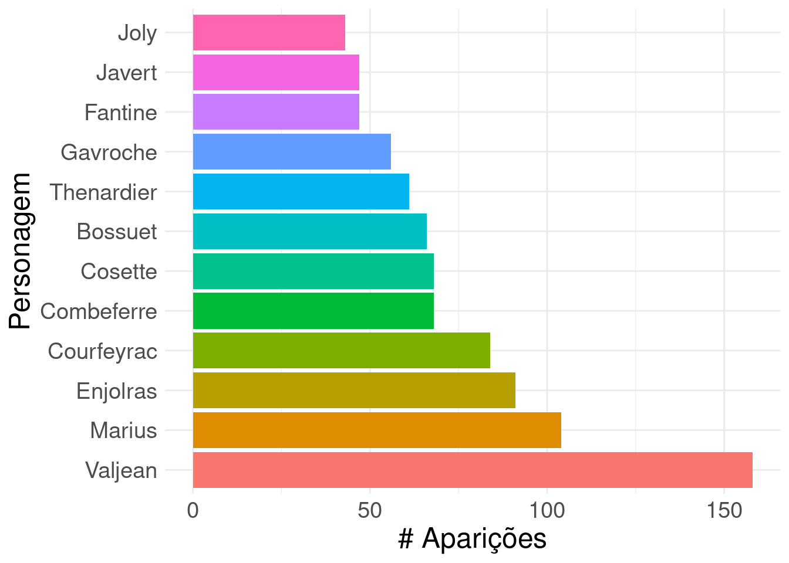

CE302: Projeto
Inclua aqui um resumo sobre o seu projeto. Esse resumo deve ter entre 150 e 200 palavras. Deve apresentar a motivação para o estudo, uma breve introdução, a metodologia aplicada, resultados e uma breve conclusão. Não deve conter referências bibliográficas.
Introdução
O livro Os Miseráveis de Victor Hugo (1802 - 1885), publicado em 1862, apresenta uma crítica à desigualdade social e à miséria vividos na França do período da revolução francesa. A história foca no destino de um personagem principal: Jean Valjean e narra seus encontros com demais personagens desde o momento da sua soltura até sua morte.
Aqui, temos como objetivo analisar as relações interpessoais de Jean Valjean ao longo de sua tragetória.
Materiais e Métodos
A fim de analisar os encontros do personagem principal, iniciamos lendo os banco de dados les_mis_personagens.csv e lesmis_aparicoes.csv. Os dados foram coletados por XXXX em XXXX (Rossi & Ahmed, 2015).
…
Resultados e Discussão
O personagem que teve mais encontros com Jean Valjean foi Cosette, com 31 interações, seguido pelo personagem Marius, com 19 encontros. Juntos os dois totalizaram 6.1 % do total de interações do personagem principal.
Código
maiores_aparicoes = encontros%>%
pivot_longer(-degree,
names_to = "direcao",
values_to = "personagem") %>%
select(-direcao) %>%
group_by(personagem) %>%
summarise(aparicoes = sum(degree)) %>%
arrange(desc(aparicoes)) %>%
filter(aparicoes > 40)
maiores_aparicoes$personagem %<>% factor(levels = maiores_aparicoes$personagem )Um gráfico mostrando os personagens que aparecem mais vezes está apresentado em Figura 1.
Código

Valjean é o personagem que aparece mais vezes no romance de Victor Hugo, seguido por Marius. Javert, o arqui-inimigo de Jean, aparece apenas 47 vezes, destas 17 são com Jean, 6 com Enjolras, o líder do ABC.
…
Conclusões e Persperctivas Futuras
Valjean, um homem condenado à morte - mesmo que livre - é o protagonista do romance de Victor Hugo, Os miseráveis. Embora perseguido por Javert durante toda a narrativa, apresentam poucos encontros, de fato, apenas cerca de 9% dos encontros de ambos.
Neste trabalho, analisamos a estrutura dos encontros entre os personagens principais da narrativa de Victor Hugo. Análises referentes a … ainda devem ser realizadas para melhor compreensão de temas como …